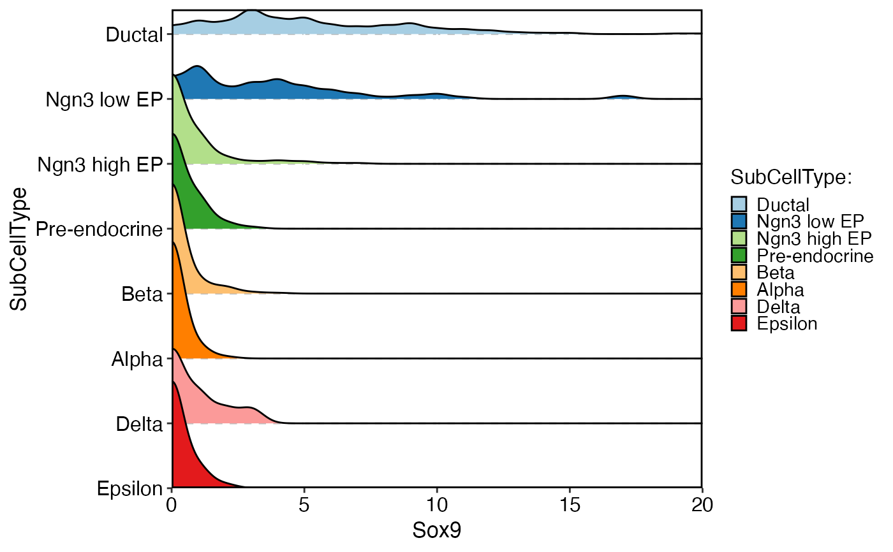
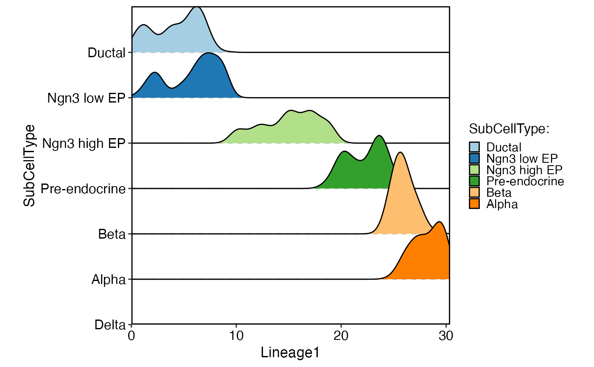
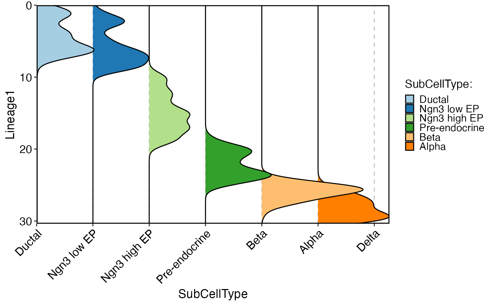
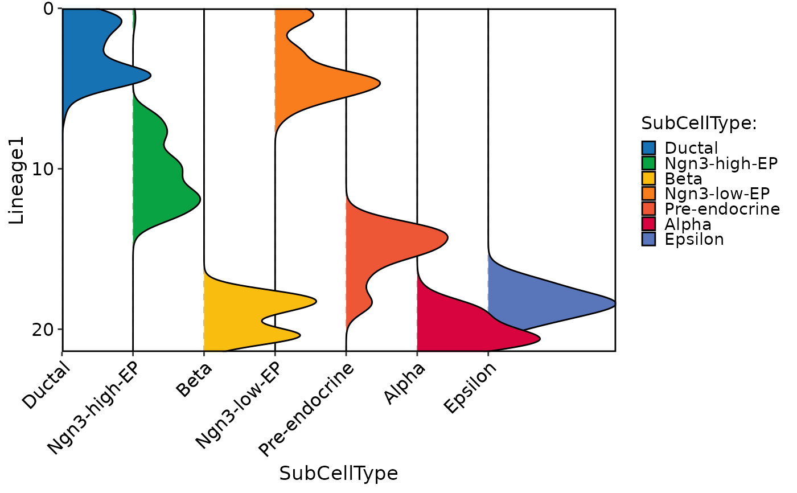

Plots the density of specified features in a single or multiple groups, grouped by specified variables.
Usage
CellDensityPlot(
srt,
features,
group.by = NULL,
split.by = NULL,
assay = NULL,
layer = "data",
flip = FALSE,
reverse = FALSE,
x_order = c("value", "rank"),
decreasing = NULL,
palette = "Paired",
palcolor = NULL,
cells = NULL,
keep_empty = FALSE,
y.nbreaks = 4,
y.min = NULL,
y.max = NULL,
same.y.lims = FALSE,
aspect.ratio = NULL,
title = NULL,
subtitle = NULL,
legend.position = "right",
legend.direction = "vertical",
theme_use = "theme_scop",
theme_args = list(),
combine = TRUE,
nrow = NULL,
ncol = NULL,
byrow = TRUE,
force = FALSE
)Arguments
- srt
A Seurat object.
- features
A character vector specifying the features to plot.
- group.by
A character vector specifying the variables to group the data by.
- split.by
A character vector specifying the variables to split the data by. Default is NULL, which means no splitting is performed.
- assay
A character specifying the assay to use from the Seurat object. Default is NULL, which means the default assay will be used.
- layer
A character specifying the layer to use from the assay. Default is "data".
- flip
A logical indicating whether to flip the x-axis. Default is FALSE.
- reverse
A logical indicating whether to reverse the y-axis. Default is FALSE.
- x_order
A character specifying how to order the x-axis. Can be "value" or "rank". Default is "value".
- decreasing
A logical indicating whether to order the groups in decreasing order. Default is NULL.
- palette
A character specifying the color palette to use for grouping variables. Default is "Paired".
- palcolor
A character specifying the color to use for each group. Default is NULL.
- cells
A character vector specifying the cells to plot. Default is NULL, which means all cells are included.
- keep_empty
A logical indicating whether to keep empty groups. Default is FALSE.
- y.nbreaks
An integer specifying the number of breaks on the y-axis. Default is 4.
- y.min
A numeric specifying the minimum value on the y-axis. Default is NULL, which means the minimum value will be automatically determined.
- y.max
A numeric specifying the maximum value on the y-axis. Default is NULL, which means the maximum value will be automatically determined.
- same.y.lims
A logical indicating whether to use the same y-axis limits for all plots. Default is FALSE.
- aspect.ratio
A numeric specifying the aspect ratio of the plot. Default is NULL, which means the aspect ratio will be automatically determined.
- title
A character specifying the title of the plot. Default is NULL.
- subtitle
A character specifying the subtitle of the plot. Default is NULL.
- legend.position
A character specifying the position of the legend. Default is "right".
- legend.direction
A character specifying the direction of the legend. Default is "vertical".
- theme_use
A character specifying the theme to use. Default is "theme_scop".
- theme_args
A list of arguments to pass to the theme function.
- combine
A logical indicating whether to combine multiple plots into a single plot. Default is TRUE.
- nrow
An integer specifying the number of rows in the combined plot. Default is NULL, which means determined automatically based on the number of plots.
- ncol
An integer specifying the number of columns in the combined plot. Default is NULL, which means determined automatically based on the number of plots.
- byrow
A logical indicating whether to add plots by row or by column in the combined plot. Default is TRUE.
- force
A logical indicating whether to continue plotting if there are more than 50 features. Default is FALSE.
Examples
data(pancreas_sub)
pancreas_sub <- standard_scop(pancreas_sub)
#> ℹ [2025-09-09 10:42:16] Start standard scop workflow...
#> ℹ [2025-09-09 10:42:17] Checking a list of <Seurat> objects...
#> ! [2025-09-09 10:42:17] Data 1/1 of the `srt_list` is "unknown"
#> ℹ [2025-09-09 10:42:17] Perform `NormalizeData()` with `normalization.method = 'LogNormalize'` on the data 1/1 of the `srt_list`...
#> ℹ [2025-09-09 10:42:19] Perform `Seurat::FindVariableFeatures()` on the data 1/1 of the `srt_list`...
#> ℹ [2025-09-09 10:42:19] Use the separate HVF from srt_list
#> ℹ [2025-09-09 10:42:19] Number of available HVF: 2000
#> ℹ [2025-09-09 10:42:20] Finished check
#> ℹ [2025-09-09 10:42:20] Perform `Seurat::ScaleData()` on the data...
#> Warning: Different features in new layer data than already exists for scale.data
#> ℹ [2025-09-09 10:42:21] Perform pca linear dimension reduction on the data...
#> StandardPC_ 1
#> Positive: Aplp1, Cpe, Gnas, Fam183b, Map1b, Hmgn3, Pcsk1n, Chga, Tuba1a, Bex2
#> Syt13, Isl1, 1700086L19Rik, Pax6, Chgb, Scgn, Rbp4, Scg3, Gch1, Camk2n1
#> Cryba2, Pcsk2, Pyy, Tspan7, Mafb, Hist3h2ba, Dbpht2, Abcc8, Rap1b, Slc38a5
#> Negative: Spp1, Anxa2, Sparc, Dbi, 1700011H14Rik, Wfdc2, Gsta3, Adamts1, Clu, Mgst1
#> Bicc1, Ldha, Vim, Cldn3, Cyr61, Rps2, Mt1, Ptn, Phgdh, Nudt19
#> Smtnl2, Smco4, Habp2, Mt2, Col18a1, Rpl12, Galk1, Cldn10, Acot1, Ccnd1
#> StandardPC_ 2
#> Positive: Rbp4, Tagln2, Tuba1b, Fkbp2, Pyy, Pcsk2, Iapp, Tmem27, Meis2, Tubb4b
#> Pcsk1n, Dbpht2, Rap1b, Dynll1, Tubb2a, Sdf2l1, Scgn, 1700086L19Rik, Scg2, Abcc8
#> Atp1b1, Hspa5, Fam183b, Papss2, Slc38a5, Scg3, Mageh1, Tspan7, Ppp1r1a, Ociad2
#> Negative: Neurog3, Btbd17, Gadd45a, Ppp1r14a, Neurod2, Sox4, Smarcd2, Mdk, Pax4, Btg2
#> Sult2b1, Hes6, Grasp, Igfbpl1, Gpx2, Cbfa2t3, Foxa3, Shf, Mfng, Tmsb4x
#> Amotl2, Gdpd1, Cdc14b, Epb42, Rcor2, Cotl1, Upk3bl, Rbfox3, Cldn6, Cer1
#> StandardPC_ 3
#> Positive: Nusap1, Top2a, Birc5, Aurkb, Cdca8, Pbk, Mki67, Tpx2, Plk1, Ccnb1
#> 2810417H13Rik, Incenp, Cenpf, Ccna2, Prc1, Racgap1, Cdk1, Aurka, Cdca3, Hmmr
#> Spc24, Kif23, Sgol1, Cenpe, Cdc20, Hist1h1b, Cdca2, Mxd3, Kif22, Ska1
#> Negative: Anxa5, Pdzk1ip1, Acot1, Tpm1, Anxa2, Dcdc2a, Capg, Sparc, Ttr, Pamr1
#> Clu, Cxcl12, Ndrg2, Hnf1aos1, Gas6, Gsta3, Krt18, Ces1d, Atp1b1, Muc1
#> Hhex, Acadm, Spp1, Enpp2, Bcl2l14, Sat1, Smtnl2, 1700011H14Rik, Tgm2, Fam159a
#> StandardPC_ 4
#> Positive: Glud1, Tm4sf4, Akr1c19, Cldn4, Runx1t1, Fev, Pou3f4, Gm43861, Pgrmc1, Arx
#> Cd200, Lrpprc, Hmgn3, Ppp1r14c, Pam, Etv1, Tsc22d1, Slc25a5, Akap17b, Pgf
#> Fam43a, Emb, Jun, Krt8, Dnajc12, Mid1ip1, Ids, Rgs17, Uchl1, Alcam
#> Negative: Ins2, Ins1, Ppp1r1a, Nnat, Calr, Sytl4, Sdf2l1, Iapp, Pdia6, Mapt
#> G6pc2, C2cd4b, Npy, Gng12, P2ry1, Ero1lb, Adra2a, Papss2, Arhgap36, Fam151a
#> Dlk1, Creld2, Gip, Tmem215, Gm27033, Cntfr, Prss53, C2cd4a, Lyve1, Ociad2
#> StandardPC_ 5
#> Positive: Pdx1, Nkx6-1, Npepl1, Cldn4, Cryba2, Fev, Jun, Chgb, Gng12, Adra2a
#> Mnx1, Sytl4, Pdk3, Gm27033, Nnat, Chga, Ins2, 1110012L19Rik, Enho, Krt7
#> Mlxipl, Tmsb10, Flrt1, Pax4, Tubb3, Prrg2, Gars, Frzb, BC023829, Gm2694
#> Negative: Irx2, Irx1, Gcg, Ctxn2, Tmem27, Ctsz, Tmsb15l, Nap1l5, Pou6f2, Gria2
#> Ghrl, Peg10, Smarca1, Arx, Lrpap1, Rgs4, Ttr, Gast, Tmsb15b2, Serpina1b
#> Slc16a10, Wnk3, Ly6e, Auts2, Sct, Arg1, Dusp10, Sphkap, Dock11, Edn3
#> ℹ [2025-09-09 10:42:22] Perform `Seurat::FindClusters()` with louvain and `cluster_resolution` = 0.6 on the data...
#> ℹ [2025-09-09 10:42:22] Reorder clusters...
#> ! [2025-09-09 10:42:22] Using `Seurat::AggregateExpression()` to calculate pseudo-bulk data for <Assay5>
#> ℹ [2025-09-09 10:42:22] Perform umap nonlinear dimension reduction on the data...
#> ℹ [2025-09-09 10:42:22] Non-linear dimensionality reduction (umap) using (Standardpca) dims (1-50) as input
#> ℹ [2025-09-09 10:42:24] Non-linear dimensionality reduction (umap) using (Standardpca) dims (1-50) as input
#> ✔ [2025-09-09 10:42:26] Run scop standard workflow done
CellDensityPlot(
pancreas_sub,
features = "Sox9",
group.by = "SubCellType"
)
#> ℹ [2025-09-09 10:42:26] Installing package: ggridges...
#>
#> → Will install 14 packages.
#> → All 14 packages (0 B) are cached.
#> + RColorBrewer 1.1-3
#> + farver 2.1.2
#> + ggplot2 3.5.2
#> + ggridges 0.5.7
#> + gtable 0.3.6
#> + isoband 0.2.7
#> + labeling 0.4.3
#> + magrittr 2.0.3
#> + pillar 1.11.0
#> + scales 1.4.0
#> + tibble 3.3.0
#> + utf8 1.2.6
#> + viridisLite 0.4.2
#> + withr 3.0.2
#>
#> ℹ No downloads are needed, 14 pkgs are cached
#> ✔ Got labeling 0.4.3 (x86_64-pc-linux-gnu-ubuntu-24.04) (60.95 kB)
#> ✔ Got utf8 1.2.6 (x86_64-pc-linux-gnu-ubuntu-24.04) (151.81 kB)
#> ✔ Got gtable 0.3.6 (x86_64-pc-linux-gnu-ubuntu-24.04) (222.55 kB)
#> ✔ Got magrittr 2.0.3 (x86_64-pc-linux-gnu-ubuntu-24.04) (223.37 kB)
#> ✔ Got pillar 1.11.0 (x86_64-pc-linux-gnu-ubuntu-24.04) (660.35 kB)
#> ✔ Got scales 1.4.0 (x86_64-pc-linux-gnu-ubuntu-24.04) (841.36 kB)
#> ✔ Got isoband 0.2.7 (x86_64-pc-linux-gnu-ubuntu-24.04) (1.64 MB)
#> ✔ Got tibble 3.3.0 (x86_64-pc-linux-gnu-ubuntu-24.04) (680.35 kB)
#> ✔ Got RColorBrewer 1.1-3 (x86_64-pc-linux-gnu-ubuntu-24.04) (51.81 kB)
#> ✔ Got viridisLite 0.4.2 (x86_64-pc-linux-gnu-ubuntu-24.04) (1.30 MB)
#> ✔ Got withr 3.0.2 (x86_64-pc-linux-gnu-ubuntu-24.04) (223.90 kB)
#> ✔ Got ggridges 0.5.7 (x86_64-pc-linux-gnu-ubuntu-24.04) (2.25 MB)
#> ✔ Got farver 2.1.2 (x86_64-pc-linux-gnu-ubuntu-24.04) (1.47 MB)
#> ✔ Got ggplot2 3.5.2 (x86_64-pc-linux-gnu-ubuntu-24.04) (5.00 MB)
#> ✔ Installed farver 2.1.2 (68ms)
#> ✔ Installed ggplot2 3.5.2 (104ms)
#> ✔ Installed ggridges 0.5.7 (126ms)
#> ✔ Installed gtable 0.3.6 (173ms)
#> ✔ Installed isoband 0.2.7 (168ms)
#> ✔ Installed labeling 0.4.3 (60ms)
#> ✔ Installed magrittr 2.0.3 (58ms)
#> ✔ Installed pillar 1.11.0 (62ms)
#> ✔ Installed RColorBrewer 1.1-3 (60ms)
#> ✔ Installed scales 1.4.0 (60ms)
#> ✔ Installed tibble 3.3.0 (99ms)
#> ✔ Installed utf8 1.2.6 (102ms)
#> ✔ Installed viridisLite 0.4.2 (62ms)
#> ✔ Installed withr 3.0.2 (46ms)
#> ✔ 1 pkg + 25 deps: kept 11, added 14, dld 14 (14.78 MB) [3.5s]
#> ℹ [2025-09-09 10:42:30] All packages installed successfully
#> Picking joint bandwidth of 0.209

pancreas_sub <- RunSlingshot(
pancreas_sub,
group.by = "SubCellType",
reduction = "UMAP"
)
#> Warning: No shared levels found between `names(values)` of the manual scale and the
#> data's fill values.
#> Warning: No shared levels found between `names(values)` of the manual scale and the
#> data's fill values.
#> Warning: Removed 8 rows containing missing values or values outside the scale range
#> (`geom_path()`).
#> Warning: Removed 8 rows containing missing values or values outside the scale range
#> (`geom_path()`).

CellDensityPlot(
pancreas_sub,
features = "Lineage1",
group.by = "SubCellType",
aspect.ratio = 1
)
#> ℹ [2025-09-09 10:42:35] Installing package: ggridges...
#>
#>
#> ℹ No downloads are needed
#> ✔ 1 pkg + 25 deps: kept 25 [1s]
#> ℹ [2025-09-09 10:42:36] All packages installed successfully
#> Picking joint bandwidth of 0.661

CellDensityPlot(
pancreas_sub,
features = "Lineage1",
group.by = "SubCellType",
flip = TRUE
)
#> ℹ [2025-09-09 10:42:36] Installing package: ggridges...
#>
#>
#> ℹ No downloads are needed
#> ✔ 1 pkg + 25 deps: kept 25 [1s]
#> ℹ [2025-09-09 10:42:37] All packages installed successfully
#> Picking joint bandwidth of 0.661
